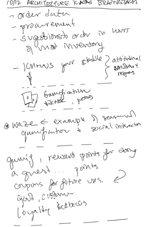
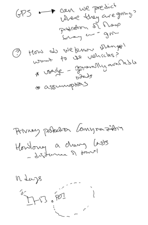
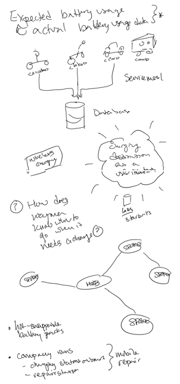
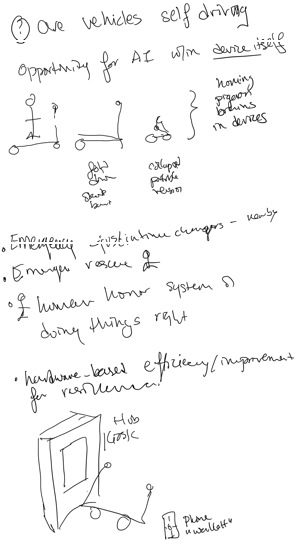
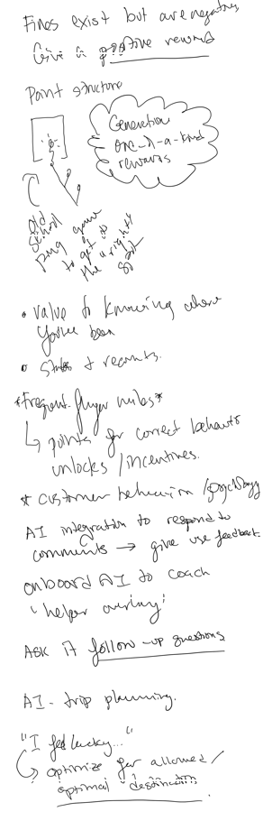

graph TD
SPORC1[SPORC] -- connects to --> HUB[HUB]
HUB -- connects to --> SPORC2[SPORC]
HUB -- connects to --> SPORC3[SPORC]
Architecture Brainstorm 1
Raw Notes + AI Summarization
Board + Sketches





AI Summmary
Notes transcribed using WPP Open, Gemini 2.5 Flash
Order Data
- Procurement
- Suggestions to order in terms of most inventory
User Understanding
- Knows your schedule
- Attitudinal
- Behavioral responses
Gamification
- Feedback, prizes
- Waze example: Seasonal gamification & social interaction
- Gamify:
- Reward points for doing a quest… points.
- Coupons for future uses.
- A/B testing, customer loyalty, feedback.
Prediction & Usage
- GPS: Can we predict where they are going?
- Frustration of “how long can go”
- How do we know when/who want to use vehicles?
- Usage - generally available
- Odds
- Assumptions
Privacy & Charge Management
- Privacy protection / Anonymization
- How long a charge lasts:
- Distance of travel
ndays- Conceptual Diagram (Time/POI): A region or point of interest (POI) over a specific time window (e.g., 17-13).
Battery Usage & Service Model
- Expected battery usage & actual battery usage data
Wireless energy
Question: How does Waze know when to go when it needs a charge?
Network & Repair Infrastructure
- Hot-swappable battery packs
- Company vans:
- Charging stations on board
- Repair stations
- (Grouped as: Mobile repair)
AI & Vehicle Capabilities
- Are vehicles self-driving?
- Opportunity for AI within device itself
- Moving, proven patterns in devices
- Vehicle Types/Stages:
- Scooter, Skateboard, Bike
- Beta, Dev, Test, Alpha, Pilot, Release (user groups/development stages)
System Integrations & Incentives
- Emergency chargers - nearby
- Emergency reserve
- Human honor system of doing things right
- Hardware-based efficiency/improvement for resilience
Rewards & Feedback
- Fines exist but are negative.
- Give a positive reward.
- Point structure:
- Generation, one-of-a-kind rewards
- Old school game - ping to get it right
- Value of knowing where you’ve been:
- Stats & records.
- Frequent flyer miles:
- Points for correct behaviors
- Unlocks/incentives
- Customer behavior / Psychology:
- AI integration to respond to comments -> give user feedback.
- Onboard AI to coach & help user driving!
- Ask AI follow-up questions.
AI - Trip Planning
- “I feel lucky…”
- Optimize for allowed/optimal destination.
AI Summary - Generated Diagrams
Hub & Spoke Locations
Note: This diagram is meant to show the Hub and Spoke model for pickup and return locations. Reference the drawing for a better intent.
Modeling Battery Usage & Incentives
Note: This diagram is meant to show how we can model expected energy usage and factor into incentives to return to a given charging destination. Reference the drawing for a better intent.
graph TD
A[C-Scooter] --> DB(Database)
B[C-Bike] --> DB
C[C-Car] --> DB
D[C-Van] --> DB
DB --> SM["Service Model"]
SM --> UI("Surging destination as a user incentive")
UI --> L[Labs]
UI --> S[Starbucks]
Useful Entities
Note: This diagram captures the entities in a sketch, but not the intended concept. The idea in the drawing is leveraging a kiosk at point-of-return for further gamification. Reference the drawing for a better intent. Team discussion did note this idea is beyond the brief and doesn’t match the intended business model.
graph TD HUB_G[Hub] -- connected to --> Google[Google] Vehicle[Vehicle] -- connected to --> Phone[Phone] Phone -- connected to --> Wallet[Wallet]